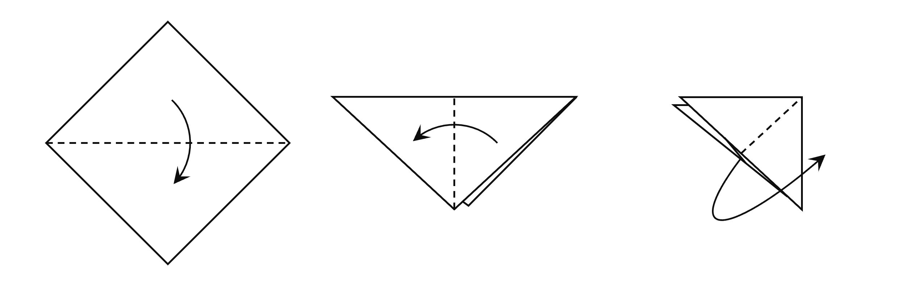
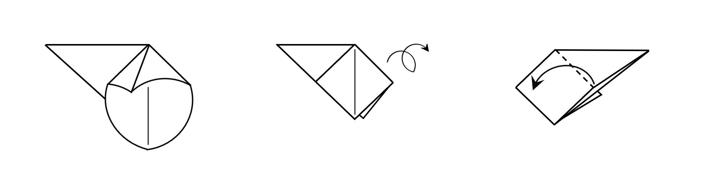
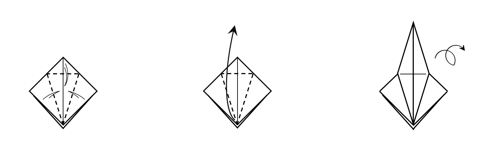
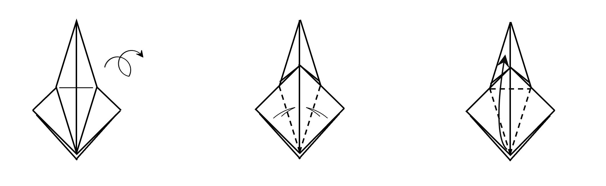
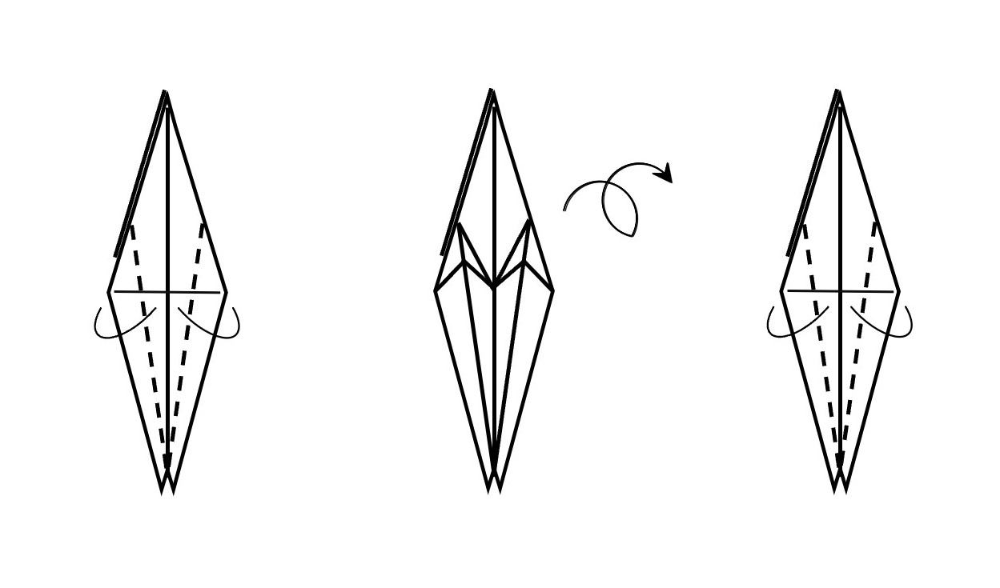
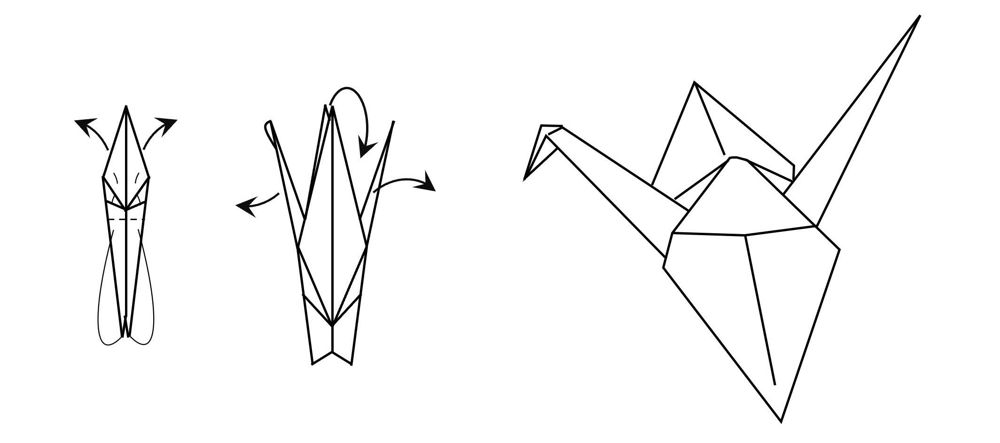

Crane
Crane Origami is the most popular one in Japan. Let's try!

- Fold the paper in two in the middle and fold it in two again.

- Fold the paper open to form a rectangle, then fold the other side in the same way.

- Fold in to form a right triangle crease, then unfold alongthe crease to form a rhombus shape.

- Do the same for the other side as in step 3.

- Fold both sides toward the center and do the same on the other side.

- Fold the long side into the short side, spread the whole thing out, and make the head prt, and you are done!
